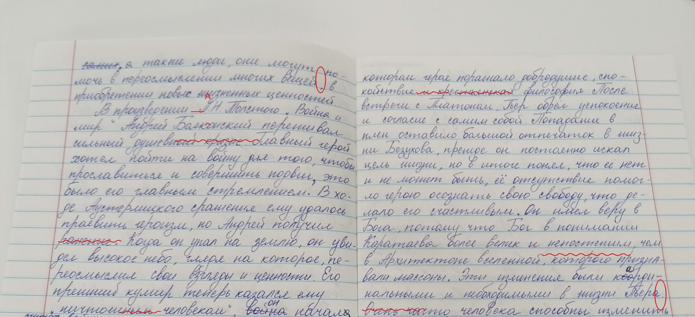
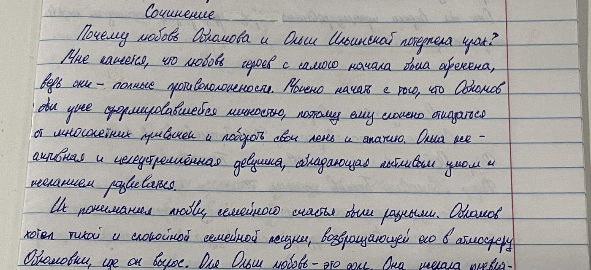

BilimAI читает рукописные работы учеников, находит ошибки и предлагает оценку. Учитель смотрит и утверждает.

Учитель делает то же, что и раньше, только не тратит вечер на проверку.
Так проходит проверка одной страницы. Нажмите «Проверить» или просто досмотрите.

Страница настоящая, из открытого набора школьных тетрадей; ошибка в слове «привычен» подчёркнута по делу. Остальные пометки показывают, как выглядит результат. Обработка идёт на серверах в Узбекистане.
Пять самых частых видов работ в школах Узбекистана.
Не проверяем: рисунки, контурные карты, чертежи и схемы. Это отдельная задача, и мы говорим об этом честно.
Программа иногда ошибается, как и человек. Поэтому она отмечает места, в которых не уверена, и ни одна оценка не выставляется без учителя.